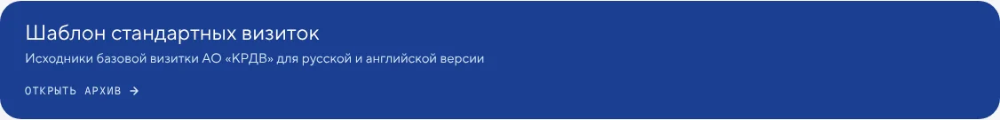

И11
Ссылки на архивы — светлые карточки вместо синих плашек
Синяя плашка «Открыть архив» стоит под каждой второй секцией — в «Корп. материалах» их пять, в «Режимах» четыре. Это самый тяжёлый и громкий элемент страницы, а по смыслу — второстепенная ссылка. В «Обзоре» мы уже сделали светлые карточки, синие при наведении.
Сейчас

Предлагаю
- Везде как в «Обзоре»: светло-серая карточка, синяя — при наведении.
- Синий цвет остаётся для действий, а не для фона ссылок.
Зачем. Внимание держится на самих материалах; страница становится тише и дороже.